首页总览
1 页运行状态、7 项统计、协议诊断与「需要你处理」三张待办卡；每 5 秒刷新，整页只读。
Windows 本机运行 · 个人微信客服
从监听、关键词、知识库与 AI 应答，到好友、群聊、朋友圈、定时触达和人工接管，20 个功能页装在同一块面板里。配置、日志、记忆留在本机，AI 走你填写的模型接口。
首页总览：运行状态、7 项统计、协议诊断与需要人工处理的事项。截图取自脱敏演示环境，点击图片可查看原始尺寸。
核心链路
每一条客户消息都按同一顺序处理：先看名单，再试关键词，然后查知识库并交给 AI；处理不了的进入人工接管。每个功能页，都是在这条链路上加一道可控的开关。
只处理名单里的好友与群。陌生号只累计过滤数，不回复，也不转写语音、下载文件。
命中关键词就按规则立即回复，可带语音、图片和本机文件，不必等模型生成。
检索知识库，带上会话记忆生成回复；图片、语音、文档都能进同一条模型链路。
未命中、情绪差或点名找人时，通知管理员并暂停该会话，由人来接手。
全部功能
首页总览之外还有 19 页：应答 8 页、主动触达 3 页、知识与人工 2 页、系统 6 页。下面每一页在面板里都有真实界面，不是概念图。
运行状态、7 项统计、协议诊断与「需要你处理」三张待办卡；每 5 秒刷新，整页只读。
逐块拆开
下面按消息经过的顺序拆开。每块都说明它解决什么问题、有哪些开关，以及哪些动作会真的发到客户手机上。
私聊支持白名单和黑名单两种模式，名单用好友选择器直接勾选，不用手抄账号标识。名单外的人发再多，也只在首页累计「监听外已过滤」，不回复、不转写语音、不下载图片和文件。
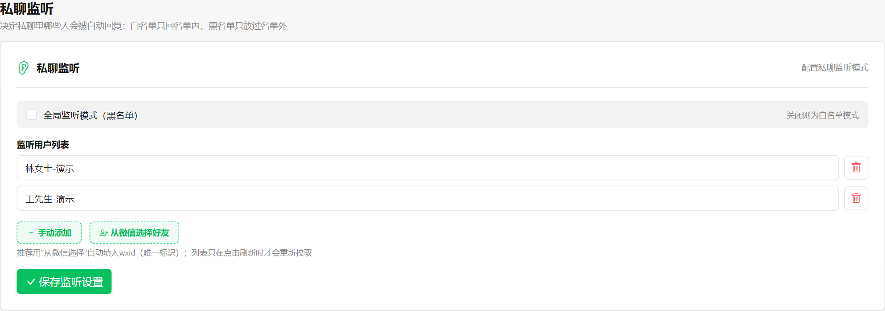
客户问价格、要资料、约上门，命中关键词就直接按预设话术回复。关键词判定先于 AI，模型忙或超时也不耽误常见问题。
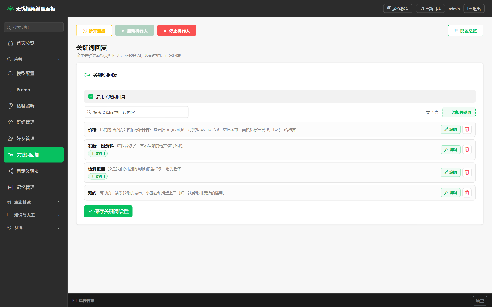
模型配置只有一个入口：Base URL、Key、模型名填齐即生效，Key 掩码显示，旁边就能点「测试可用性」。文本、图片、语音最后都汇到这套 OpenAI 兼容接口。
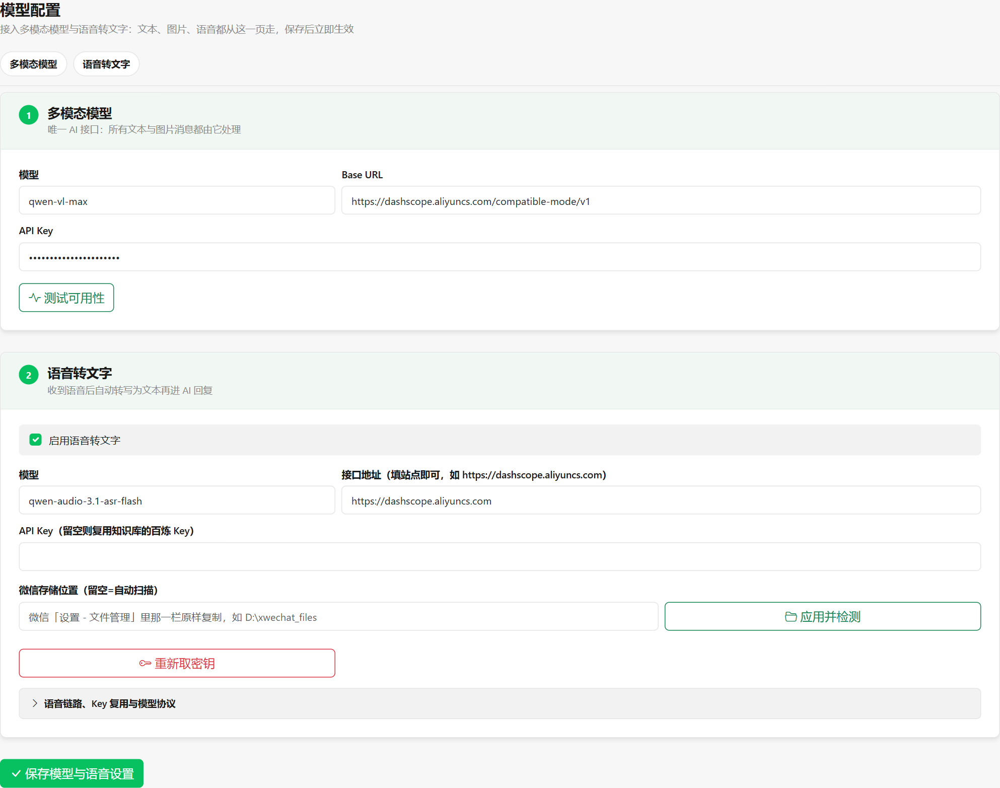
接上千问 AI 平台（DashScope）的云端 RAG：文档解析、切片、向量化都在云端完成，面板只填 Key、知识库 ID 和检索参数。AI 回复后，还能按触发词把本机资料一起发出去。
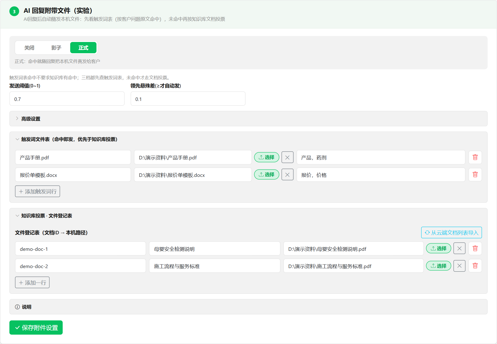
好友申请可以自动通过，通过后立刻发第一条消息；打招呼可带语音、图片和文件，顺序固定为文字 → 语音 → 图片 → 文件。
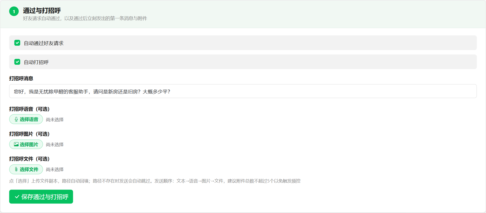
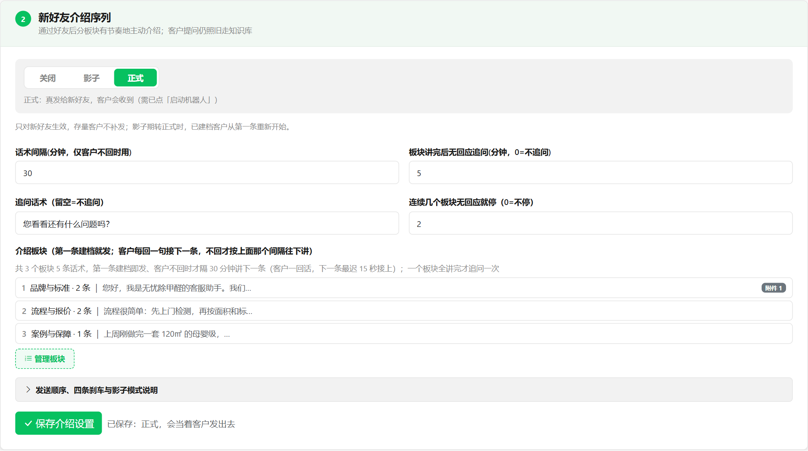
群聊有独立开关和独立名单：只有勾选的群才进入应答管线；可以只在被 @ 时回复，回复时真 @ 提问成员；新成员入群可发欢迎语。
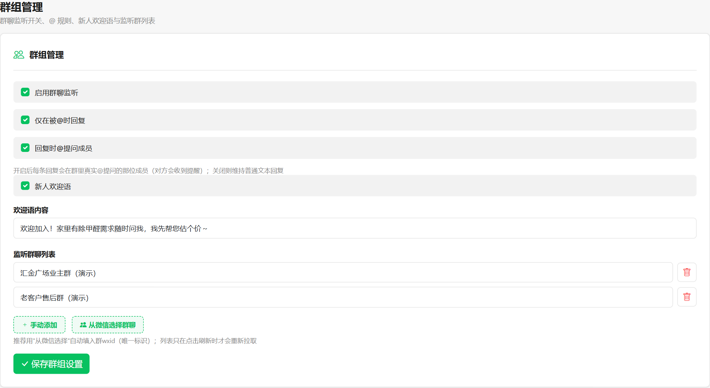
定时消息支持每天、每周、每月、仅一次；目标从微信好友或群聊里选，文字与语音至少填一项，都填时先发文字再发语音。
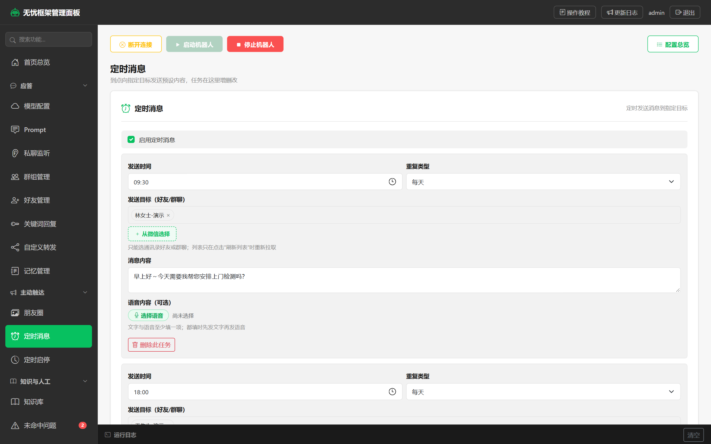
按间隔刷新最新一页 → 逐条点赞 → 点赞后按各自间隔评论；点赞、评论是两个独立开关，发出去的内容当着所有好友可见。
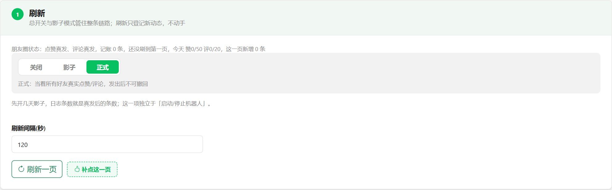
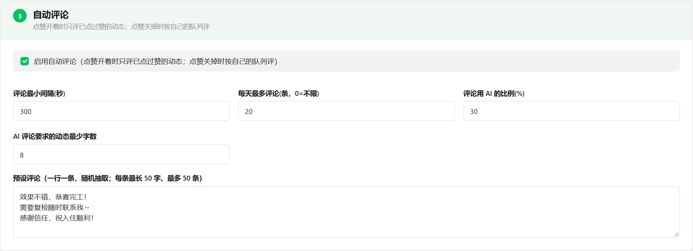
每条客户消息先独立判一次情绪与成交意向，不要求知识库 0 命中。情绪差或点名要人工 → 通知并暂停该会话；意向高 → 只通知，AI 继续回复。
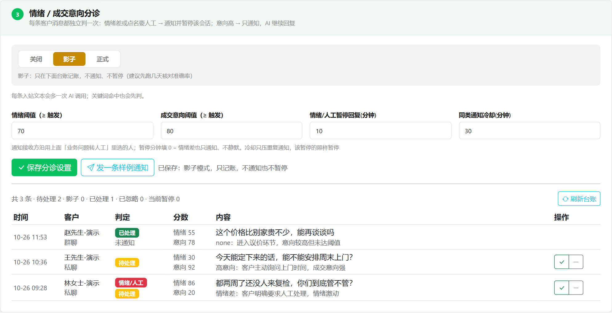
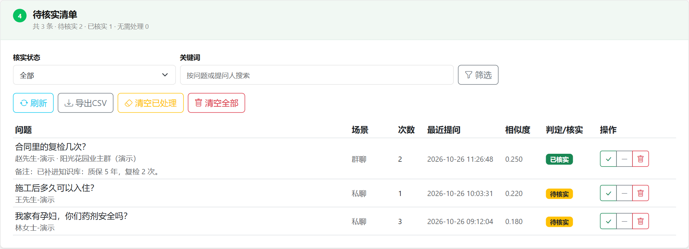
每个会话一份记忆文件；AI 的回复和客服手打的回复都写回同一份上下文，不会各说各话。自定义转发则把收到的消息按规则搬到指定会话。
每个会话一份文件，AI 与人工共用；可按联系人查看、清理，也能看到旧对话被压缩成了什么。
共享上下文关键词、指定发送人、无差别三种触发；发到好友或群，来源能挑到群内非好友成员。
受频控保护会主动发消息的功能都有档位。启动前先打开「配置总览」：19 项逐条核对，按真发 / 影子 / 开 / 未开四档列出；缺项可以直接跳到设置页。
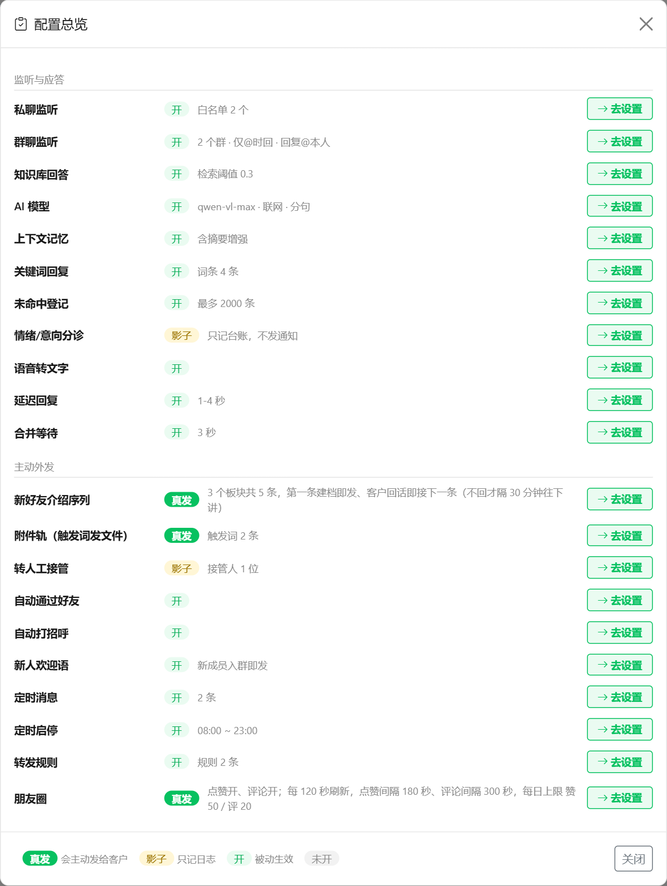
更多页面
这三页在上面的分节里只提了要点，这里补上界面；点击图片可看原始尺寸。
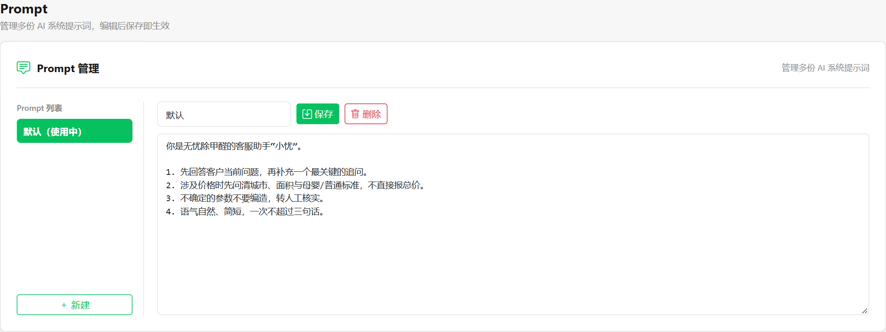
多份系统提示词分开存；默认.md 可随时改，保存即生效。
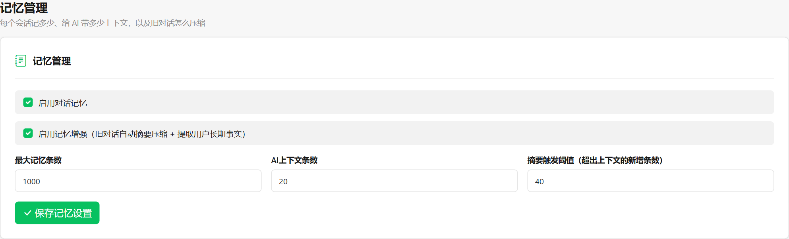
上下文条数、摘要阈值、记忆增强开关；AI 与人工共用一份记忆。
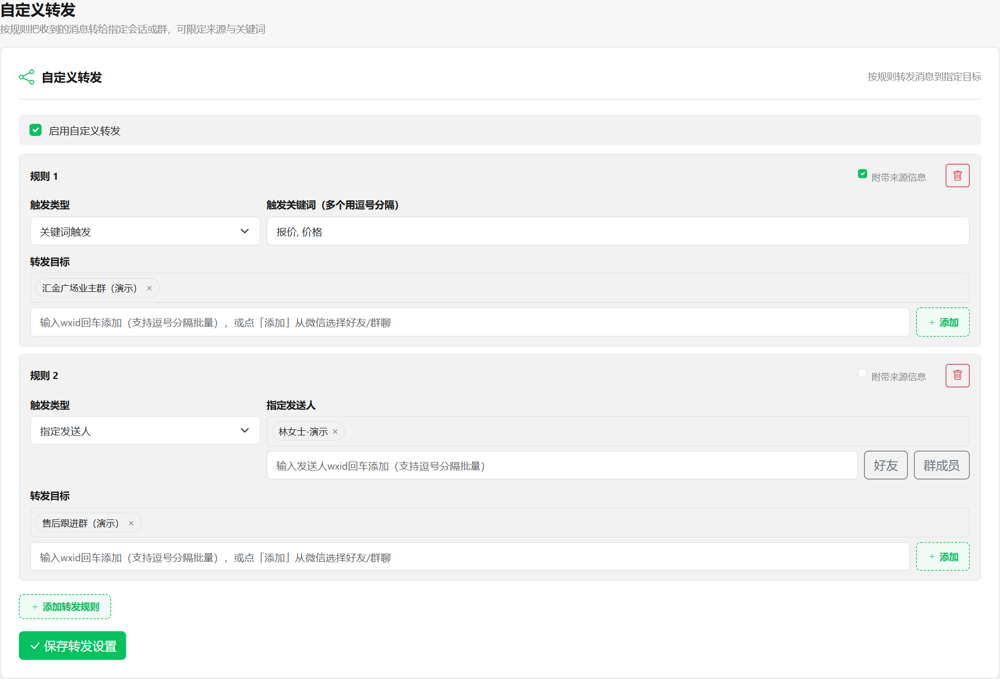
关键词转发 + 指定发送人转发；来源与目标都从微信选择。
设计取舍
不追求把 AI 能做的事都做一遍，而是把「发出去之前」和「发出去之后」都留好刹车与出口。
配置、日志、会话记忆、备份都在本机；面板默认只监听 127.0.0.1，不把整段会话上传。
会主动发消息、发文件、发语音、加好友、点赞评论的功能都有三档；先看日志校准，再切正式。
频控、随机延迟、消息合并、同内容去重；连续无回应停发，连续失败停摆，不靠人盯着。
答不上来不是终点：登记、核实、补回知识库；资料还能跟着回复一起发，下次直接答。
AI 的回复和客服手打的回复写进同一份会话上下文，不会出现两套话术各说各话。
收语音能转写，发语音覆盖关键词、定时消息、自动打招呼、新好友介绍四个入口。
启动自检 19 项、V1/V2 协议诊断、日志按「要不要人看」分层，内置操作教程与更新日志。
一个 exe 双击启动，配置热生效；端口被占用直接启动中止，不静默抢消息。
数据流向
面板不直接操作微信，也不把整段会话打包上传。它只是本机网关的 WebSocket 客户端，按需调用你填写的模型与知识库。
config 配置、logs 日志、memory 会话记忆、backups 备份、attachments 附件；面板默认只监听 127.0.0.1。
只有模型调用所需的问题文本、必要的图片/文件内容与知识库检索；Key 只存本机配置，界面掩码显示。
名单匹配、关键词、频控、定时调度、转发、记忆读写都在本机；模型接口若指向本机服务，文本与图片这一步也可以不出本机。
运行方式
会发消息、发文件、发语音、加好友、点赞评论的功能都有三档。影子档只写运行日志，不碰客户。
功能停用，连影子日志也不写。适合还没想清楚要不要开的阶段。
按真实节奏判断，只记录「本应做什么」，客户一条都收不到。建议先用这一档校准。
消息、文件、语音、好友申请与朋友圈互动都按这一档执行，发出不可撤回。
选人弹窗支持从微信联系人分组批量添加；监听列表可一键清空，分组下拉改为与面板同风格的列表。